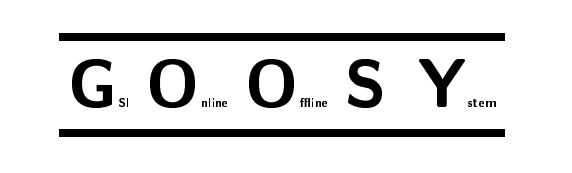
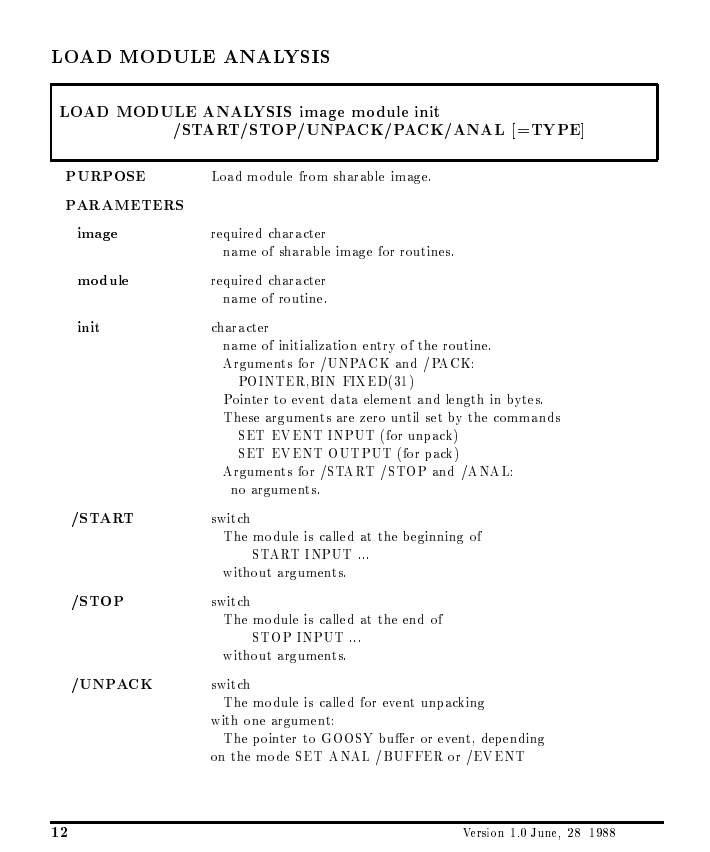

What is GOOSY?
G.O.O.S.Y. or more commonly, GOOSY, is a now unfortunately obsolete piece of software created for data acquisition and analysis and most notably used by Berkley uni labs. Not much can be found online by your average searcher. Many sites or articles about GOOSY are either shut down or paywalled. The rest exist in far-flung corners of the internet. Anyone with an interest in physics or its scandals may recognize the name as the software of choice for infamous element faker Victor Ninov. Ninov is often wrongly credited with creating GOOSY and while there is no denying his expertise in all things GOOSY, he did not make the program.

GOOSY was originally created for, and, presumably by the GSI Helmholtz Centre for Heavy Ion Research. It is now superseded by a more modern counterpart called GO4 or GSI Object Oriented Online Offline Analysis. Remembered by few and revered by even fewer, mostly forgotten as unlike GO4, GOOSY is not open source, GOOSY is a relic of the past, but one beloved by me and many other computer, physics, or history nerds nonetheless. Two years ago I started what could really be considered an archeological dig on GOOSY and this website will showcase much of the little I have found.

GOOSY's most notable use
GOOSY, if known at all, is known for its role in the great element race and subsequent Ninovium element fraud. While I am unable to say with absolute certainty how many labs used GOOSY, I can say with confidence that Berkley made frequent use of it. Most especially their superstar researcher Viktor Ninov. Promenient physicist and element hunter Al Ghiorso even said Ninov was "a younger version of himself." It is extremely unfortunate that GOOSY was Ninov's tool of choice for his fraud and I suspect this is one reason GOOSY remains non open source along with licensing agreements and other contracts.